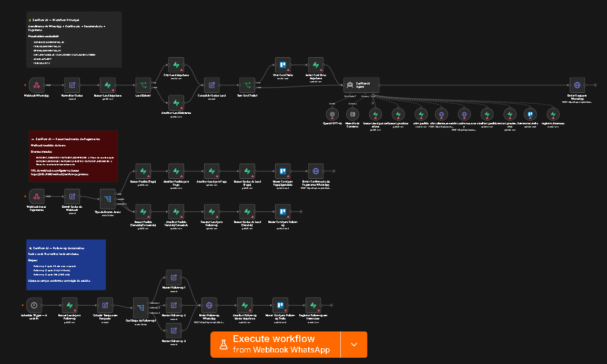

Atendimento repetitivo
Horários, valores, modalidades e aula experimental geram perguntas frequentes no WhatsApp.
O ZenFlow AI é uma arquitetura de automação com IA para atendimento, qualificação de leads, vendas, pagamento e follow-up em estúdios de yoga. O projeto combina WhatsApp, n8n, Supabase, Trello, Asaas e IA generativa em uma jornada única.
Pequenos estúdios de yoga geralmente dependem de atendimento manual para responder dúvidas, acompanhar interessados e conduzir o lead até o pagamento.
Horários, valores, modalidades e aula experimental geram perguntas frequentes no WhatsApp.
Sem resposta rápida e follow-up, interessados deixam de avançar na jornada.
Conversas, pagamentos e status do funil ficam espalhados e difíceis de acompanhar.
O ZenFlow AI propõe uma primeira camada inteligente de atendimento, integrando automação, banco de dados, CRM visual, pagamentos e follow-up.
A imagem abaixo apresenta a versão consolidada do workflow para portfólio, reunindo atendimento, reconhecimento de pagamento e follow-up automático em uma visão única.

A arquitetura foi desenhada para demonstrar uma jornada completa, desde o primeiro contato do lead até o acompanhamento pós-pagamento.
O repositório contém documentação resumida, arquitetura técnica, workflow n8n, modelagem de dados e cuidados de segurança.
Resumo da visão estratégica, mercado, arquitetura, criação interativa e PDCA.
Detalhamento da stack, fluxo geral, tabelas, funil e papel do agente IA.
Explicação do arquivo JSON consolidado e da lógica dos blocos de automação.
Script SQL com a estrutura das tabelas previstas para o projeto.
Cuidados, limitações, placeholders e escopo da versão pública de portfólio.
Arquivo consolidado do n8n para visualização e validação lógica do fluxo.